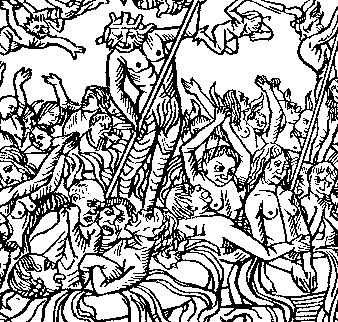

Ton

1. Diskennomp holl, Kristenien, en ifern da weled
Ar wanerezh estlammuz eus an eneoù daonet,
Pe re zo dre wir Doue dalc'het e-barzh an tan,
O vezañ graet gwallzispign euz E c'hraz er bed-mañ.
2. An ifern zo un toull don, leun a devalijenn,
E-lec'h na weler morse bihannañ skerijenn.
An norioù zo bet serret ha prennet gant Doue
,
Ha n'o digoro biken; kollet eo an alc'hwez!
3. Eur forn c'horet er bed-mañ ned eo nemed moged,
E-keñver tan an ifern, tan eneoù daonet;
Gwell e ve deviñ enni ac'hann da fin ar bed
Eged bezañ en ifern e-pad un eur gwanet!
4. Yudal reont a-bouez penn, evel chas kounnaret;
Ne ouzont pelec'h tec'hed, bep-lec'h ez-int losket!
An tan a zo war o gorre, an tan zo dindano,
An tan zo a bep kostez hag o devo atav.
5. Ar mab a lamm gant e dad hag ar verc'h gant he mamm,
D'o stlejañ, gant mil mallozh, dre o blev, kreiz ar flamm,
- Mallozh deoc'h, grweg diaket, hag ho-peuz hon ganet;
Mallozh d'eoc'h, tad didalvez, kirieg ma'z eomp daonet!-
6. O magadurezh a vo da viken gant Satan,
Kaezhour an dragoned, e-touez ar gwazhioù tan;
Hag o evaj o daeroù, hag a vezo mesket
Gant mil ha mil seurt viltañs ha gwad an touseged.
7. Ha kignet vo o c'hroc'henn, hag o c'hig difreuzet,
Gant beg an naered-wiber, ha gant dent an diaouled,
Hag en tan e vo ruilhet o c'hig hag o eskern,
Evit ma tevo kreñvoc'h forn vras eus an ifern
8. Goude ma vezint losket ur boutadig en tan,
E vint taolet en un lenn leun a skorn gant Satan,
Ha d'eus al lenn 'barzh an tan adarre vint taolet
Ha d'eus an tan 'barzh an dour, 'vel al loc'h houarn goveliet.
9. Neuze teuint da ouelañ, da ouelañ gant enkrez :
" Ho pezet ouzhomp, ma Doue, ho pet ouzhomp truez "
Hogen en aner ouelint, rak, tra bado Doue,
E pado o ankenioù hag o enkrez ivez.
10. Ken taer a vezo an tan o lesko en ifern,
Ma teuy ar mel da virviñ, penn-da-benn d'o eskern,
Seul-vui c'houlennint truez, seul-vui e vint gwanet .
Kaer o-devezo yudal, losket e vint bepret.
11. An tan-se a zo c'hwezhet dre vuanegezh Doue,
Ha n'hellfe ket hen lazhañ zoken pa her c'harfe;
Biken na daolo moged, ha biken na devo,
Hep ehanañ d'o leskiñ biken n'o distrujo.
Extraits des carnets de collecte de La Villemarqué

P.161
Kanaouennoù an Ifern
(1) Diskennomp holl, Kristenien, en ifern da weled
Ar poanioù kriz ha spontus eus an eneoù daonet,
A zo dre an urzh Doue dalc'het e-barzh an tan,
Goude bezet Dioutañ distroet e-barzh ar bed-mañ.
(2) An ifern a zo ul lec'h leun a devalijenn,
E-lec'h na weler biken ar brasañ skerijenn.
An norioù zo bet siellet gant an daouzorn Doue
,
Ha ne zigorint biken
keit e vo en buhez!
(3) Ur forn goret er bed-mañ ned eo nemed moged,
E-tall an tan an ifern, mar vezint kemparet;
Gwell ve deviñ enni tre beteg fin ar bed
Eged boud barzh an ifern
ahed un deiz
boaniet!
(4) Yudal a reont war-pouez o fenn, evel
tud dibochet
;
Ne ouzont pelec'h tec'hed, ez-int losket bepred!
An tan a zo war o gorre, an tan zo dindano,
An tan zo a bep kostez hag o devo atav.
(5) - Malloz deoc'h tadoù, mammoù, malloz deoc'h war an douar!
Evel maz oc'h kiriek, oc'h kiriek d'hon glac'har!
- Malloz deoc'h da viken, evel ho-peuz hon ganet;
Mil malloz d'eoc'h da viken, evel ma'z eomp daonet! -
P.162
(a) Ar priedoù en ifern siwazh en em gavo
Hag ivez o bugale mar vent daonet ganto.
An eil a rey d'egile mil malediksion,
Dre ma z'int kiriek 'gevred eus o daonasion.
(b) Ar re zo bet er bed-mañ, er buhez, mignoned,
O-deus drougeset Doue dre bep seurt a fec'hered,
A lesko barzh an ivern, en ur gevredigezh,
Pelec'h en em zispennint, evel loened gwez.
(c) Daoulagad ar re zaonet a vezo dalleset
Dre ar gwel eus an diaoloù hag eus an naered-wibered.
An tan hag an disesper a vezo o erutaj.
An eternite (poanius) a vezo o fartaj.
(6) O
boued
a vo birviken gant Satan,
Ar gwestl
eus an dragoned, e-touez ar
rioù
tan;
Hag ivez o holl evaj a vezo sur mesket
Eus
a kant ha kant
viltañs ha gwad an touseged.
(d) O tivskouarn na glevint nemed ar blasfemoù,
Ar glemm, al leoudoued ha bep seurt mallozioù
A roint an eil d'egile ha zoken dan Dreinded,
D'ar Werc'hez, ha d'an aelez, d'ar zent ha sentezed.
P.163
(7)
Korf an dud-se milliget a vezo diframet
,
Gant an naered-wiber, ha gant an
drouk spered
,
En tan e vo ruilhet o c'hig hag o eskern,
Evit ma tevint kreñvoc'h e forn eus an ifern
(9) Neuze e teuint da ouelañ,
siwazh gant tritigez
:
"
Bezit ouzhomp, ma Doue, bezimp ouzhomp truez!
"
Hogen en aner ouelint, rak, tra bado Doue,
E pado o
poanioù
hag o ankenn ivez.
(10)
An tan heb ehan o zebro, O ken spontus
en ifern,
Ma teuy ar mel da virviñ, penn-da-benn d'o eskern,
Hennez a vezo ur poan d'un ene daonet:
Kaer o-devezo yudal,
heb ehan vo losket.
11) An tan-se a zo c'hwezhet
digant n'erez
Doue,
Rak
se a bado bepred, a bado evel-se
Neb pret ne vezo moget, hag atav e tevo,
Hep ehanañ d'o leskiñ biken n'o distrujo.
(8) Goude ma vezint losket un amzer barzh an tan,
En em gavint en un lenn leun a skorn gant Satan,
E-lec'h ma vezint sklujet e-benn nebeud amzer
Ma poanient gant ar yenenn kerkoulz hag an tommder.
(e) Eus al lennoùs kornet-se, en tan vezint taolet
Ma pado, heb ehan tamm, o foanioù di-remed
Biken n'o-deveus paouez, hogen poan diwar poan
Ken a vezo paret, kerkent n'echuo unan.